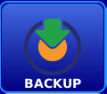
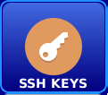
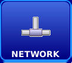

"Cloner" ist ein Wiederherstellungsprogramm für die Mect-Panels.
Verfahren zum Starten der Wiederherstellung:
Kopieren Sie img_cloner_3.x.x.ext2, sysupdate_cloner_3.x.x.sh und _ysupdate_img_3.x.x.sh in das Hauptverzeichnis eines USB-Sticks (es muss eine einzelne Partition FAT32 sein - ms-dos MBR).
Achtung: Auf dem USB-Sticks darf sich keine andere "sysupdate_"-Datei befinden.
Schalten Sie das Gerät aus.
Stecken Sie das USB-Sticks ein (wenn das Gerät den Micro-USB-Anschluss hat, verwenden Sie den Micro-USB (Typ A) --> USB-Adapter).
Schalten Sie das Gerät ein.
Auf dem USB-Stick wird der Ordner "cloner" erstellt, in dem die BACKUP-Bilder kopiert werden.
 Er sichert die Anwendung und die aktuellen Einstellungen. Die Sicherungsdatei wird im Verzeichnis "cloner" auf dem USB-Stick gespeichert.
Es stellt die Anwendung und die aktuellen Einstellungen wieder her. Die Wiederherstellungsdatei muss sich auf dem USB-Stick im "cloner"-Ordner befinden. Für retentive, hmi.ini und logs Datein können Sie wählen, ob sie wiederhergestellt ("Restore"), zurückgesetzt ("Zero") oder auf dem Gerät belassen ("Ignore") werden.
 Es führt das Update der Mect Suite durch. Das Update-Bild (z. B.: img_sysupdate-3.x.x-TP1043_01_A.ext2) muss in den Hauptordner des USB-Sticks eingefügt werden und muss mit dem zu aktualisierenden Gerät übereinstimmen. Das Symbol ist ausgegraut, wenn es keine Updates für das gewählte Panel gibt.
Es führt das Update der Mect Suite durch. Das Update-Bild (z. B.: img_sysupdate-3.x.x-TP1043_01_A.ext2) muss in den Hauptordner des USB-Sticks eingefügt werden und muss mit dem zu aktualisierenden Gerät übereinstimmen. Das Symbol ist ausgegraut, wenn es keine Updates für das gewählte Panel gibt.
 Werksreset des Panels. Installieren Sie die Anwendung "Simple" des Panels und setzen Sie die Einstellungen zurück.
Werksreset des Panels. Installieren Sie die Anwendung "Simple" des Panels und setzen Sie die Einstellungen zurück.
 VPN-Menü. Installieren/entfernen Sie das Zertifikat, das eine private Netzwerkverbindung zur sMily-Plattform ermöglicht. Die Zertifikate müssen auf dem USB-Stick im Ordner "ovpn" eingefügt werden, falls der Ordner nicht vorhanden ist, muss er im Root-Verzeichnis des USB-Sticks angelegt warden.
VPN-Menü. Installieren/entfernen Sie das Zertifikat, das eine private Netzwerkverbindung zur sMily-Plattform ermöglicht. Die Zertifikate müssen auf dem USB-Stick im Ordner "ovpn" eingefügt werden, falls der Ordner nicht vorhanden ist, muss er im Root-Verzeichnis des USB-Sticks angelegt warden.
 SSH-Menü. Ermöglicht das Kopieren von SSH-Schlüsseln auf das Gerät. Die Schlüssel müssen sich auf dem USB-Stick im Ordner "keys" befinden, wenn der Ordner nicht vorhanden ist, müssen Sie ihn im Hauptverzeichnis des USB-Sticks anlegen.
 Menü Zeit einstellen. Stellen Sie die interne unabhängige Uhr auf Batteriebetrieb ein und konfigurieren Sie, wenn Sie mit dem Internet verbunden sind, die Synchronisierung mit einer Netzwerkuhr.
Menü Zeit einstellen. Stellen Sie die interne unabhängige Uhr auf Batteriebetrieb ein und konfigurieren Sie, wenn Sie mit dem Internet verbunden sind, die Synchronisierung mit einer Netzwerkuhr.
 Netzwerk-Menü. Ermöglicht das Ändern der WiFi-, Ethernet- und Mobileinstellungen.